先问用户想成为什么，再询问当前水平。
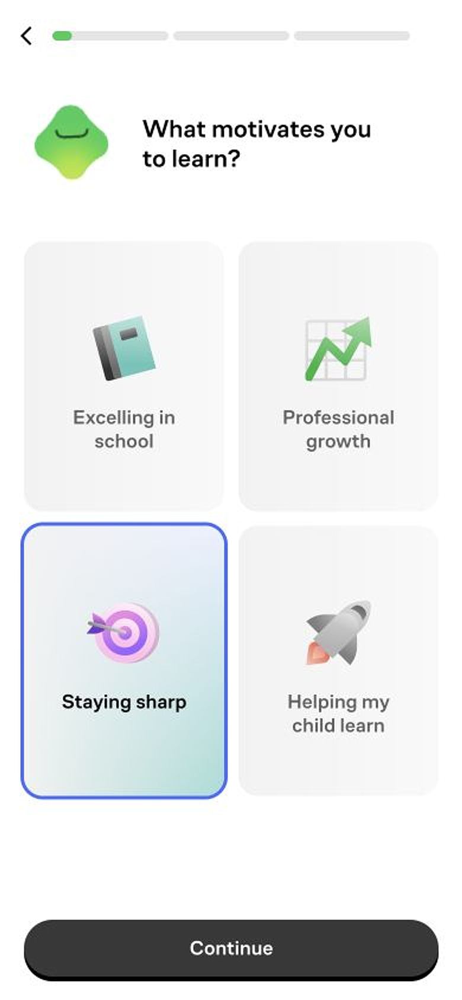
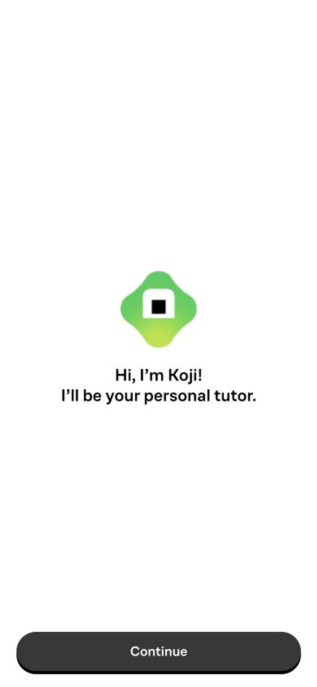
27张 iPhone 实录
3组动态过场
1条完整注册路径
iPhone 15 视口 390 × 844，资源按 2× 像素输出为 780 × 1688。
核心判断
它没有在做一张更漂亮的问卷，而是在制造 “这条路径属于我”的心理所有权。
每一次选择都会得到视觉、声音或进度上的回应。用户不是被系统采集资料，而是在和导师共同生成一个尚未揭晓的学习计划。
一条被精心调节的情绪曲线
流程没有连续提问。它在每次增加心理负担之前，先给安全感、控制权或专业证明。
- 1认识导师
把系统变成会陪伴的角色
- 2表达自我
先问为什么来，再问能力
- 3获得掌控
声音与静音权由用户决定
- 4轻度挑战
只判断会不会，不暴露答错
- 5情绪修复
挑战后立刻被鼓励和接住
- 6行为承诺
把愿望落到时长与生活时段
- 7领取成果
注册被改写为发现学习计划
关系建立
先出现的是导师，不是表单。
“I’ll be your personal tutor” 把系统判断改写成导师了解。动机题也不是冷冰冰的标签，而是一次低成本的自我表达。
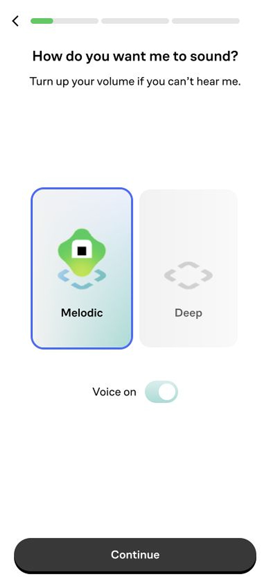
把控制权交给用户，品牌才敢更有情绪。
用户先选择导师音色，随后一直拥有静音入口。语音不再是突然闯入的功能，而是经用户授权的陪伴体验。
“How do you want me to sound?”
不是设置音频，而是在定制一段关系。
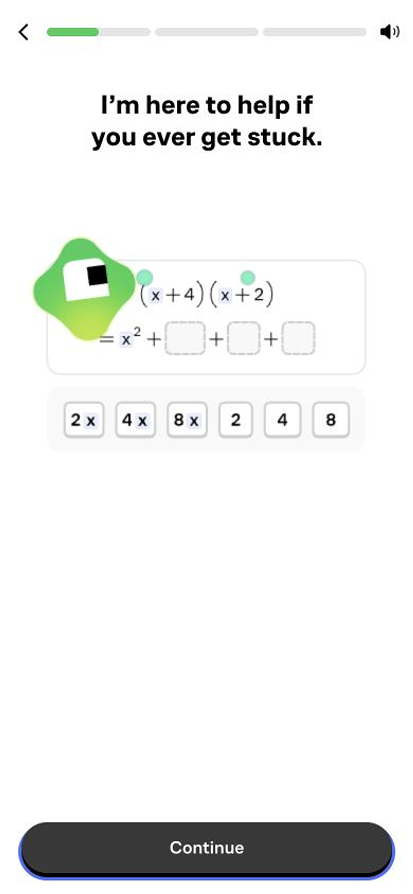
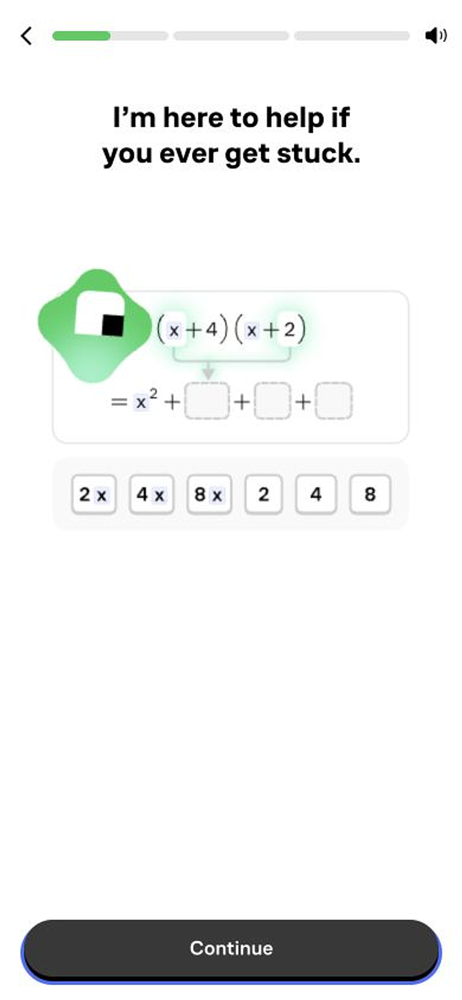
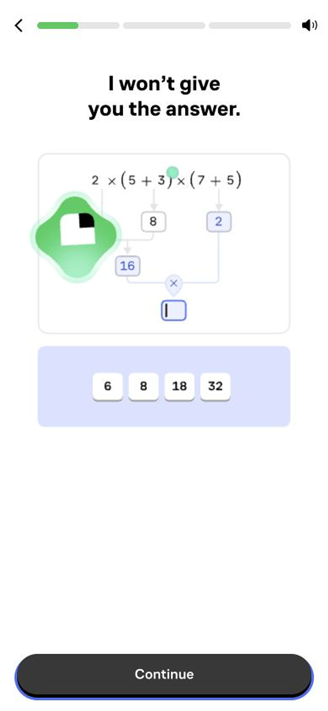
亲和力降低焦虑，权威感降低决策风险。
在用户选定学科、准备进入能力问题时，专家履历与名校背书恰好出现。它回答的不是“有什么课”，而是“这些内容是否值得信任”。
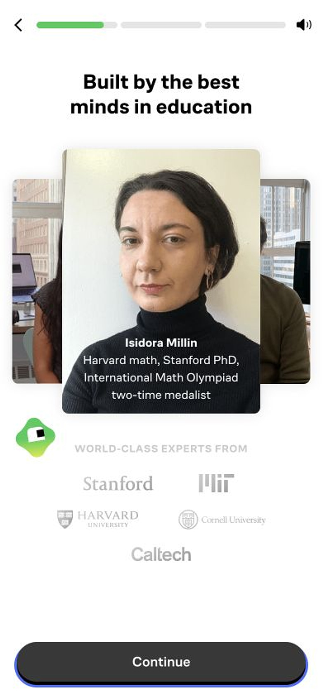
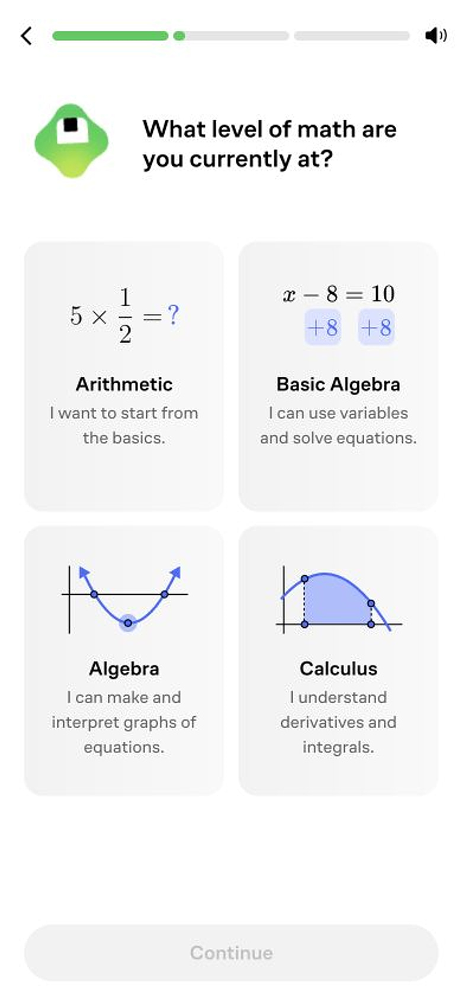
三道题，表面是诊断，实质是产品演示。
用户不需要真的解题，只需回答 No、Maybe、Yes。系统采集的是自我效能，同时让每一道题展示 Brilliant 的可视化交互能力。
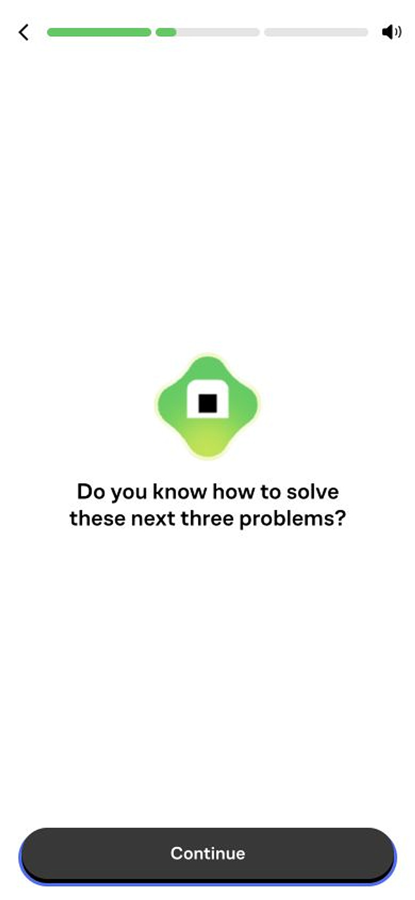
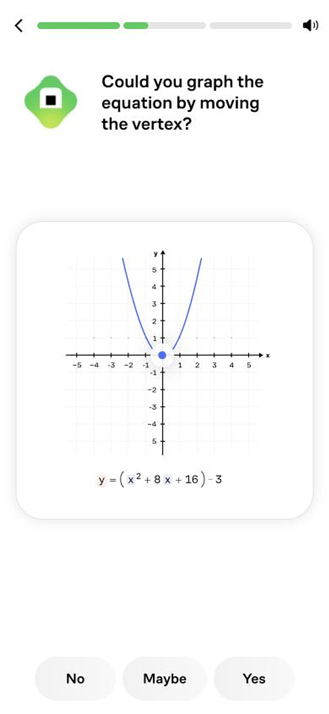
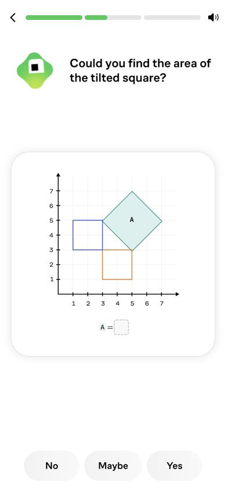
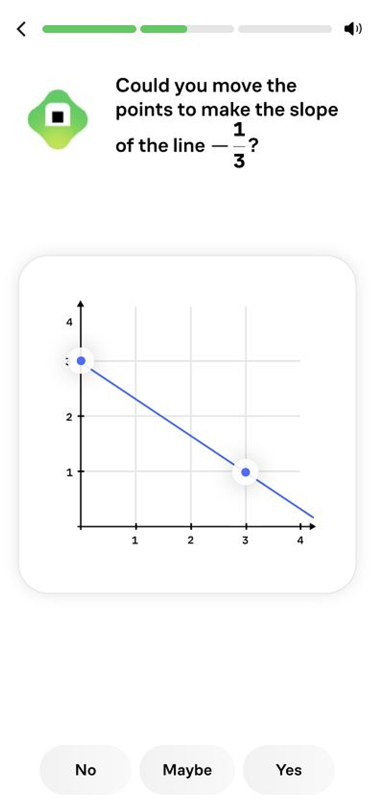
“Maybe” 是最精妙的选项。它给不确定的用户一个体面的中间地带，避免为了维护自尊而退出或虚报。
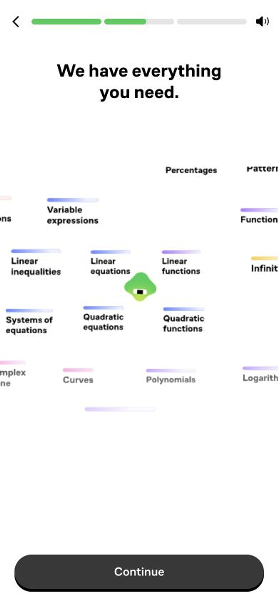
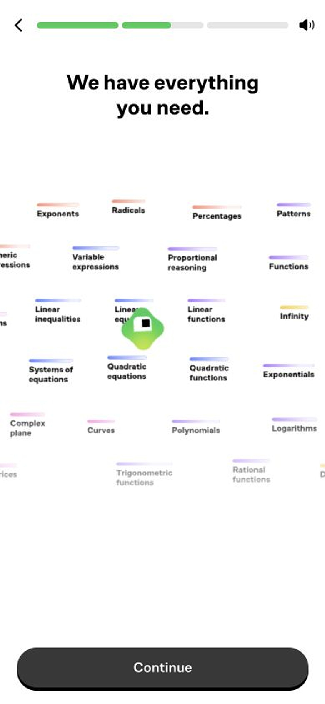
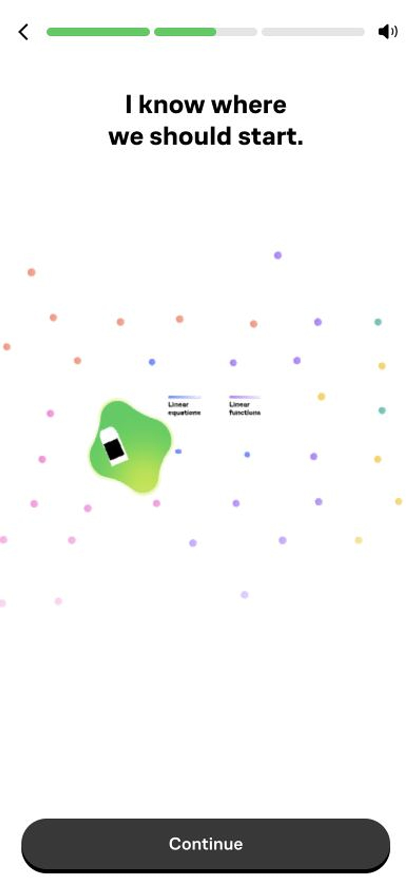
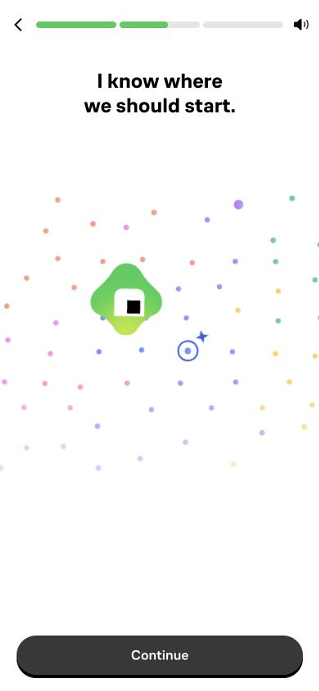
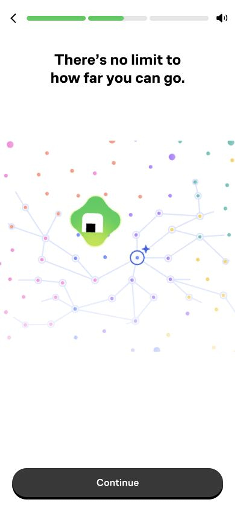
挑战之后，不给分数，先把人接住。
系统依次传达“我们拥有你需要的内容”“我知道从哪里开始”“你的成长没有上限”。这不是答题反馈，而是对能力焦虑的情绪调节。
- 不展示失败用户只会得到起点，不会得到负面等级。
- 导师继续在场Koji 进入知识网络，品牌角色与学习路径合一。
- 先修复，再承诺鼓励过场后才询问每日目标，承诺更容易发生。
把“想学习”追问到“什么时候学”。
每日时长建立低门槛承诺，生活时段把承诺绑到具体情境。它已经从画像问题转向留存设计。
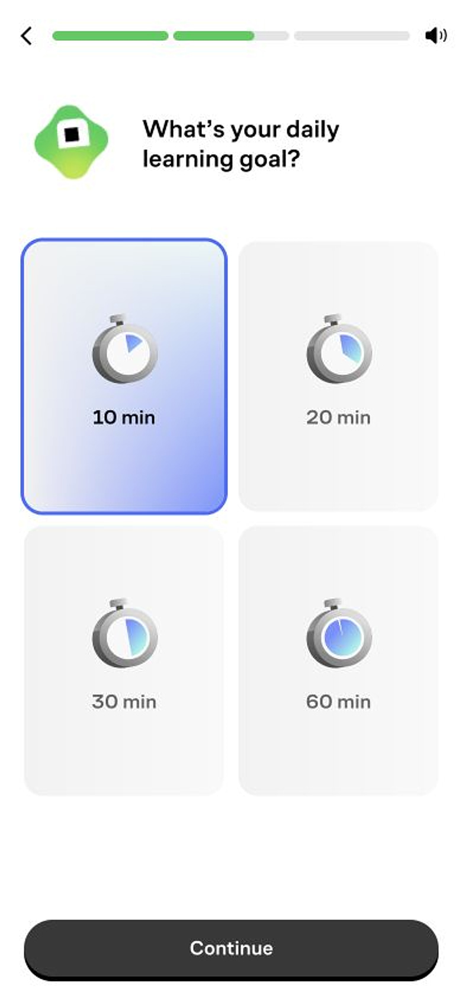
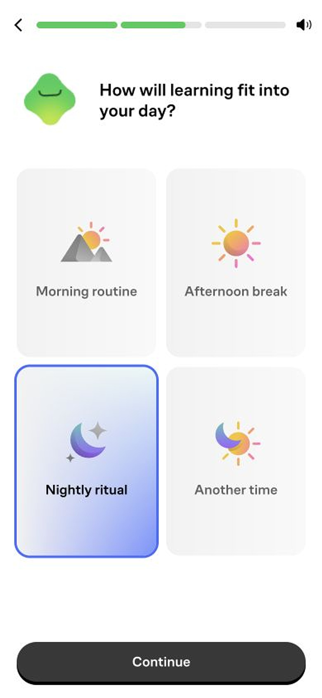
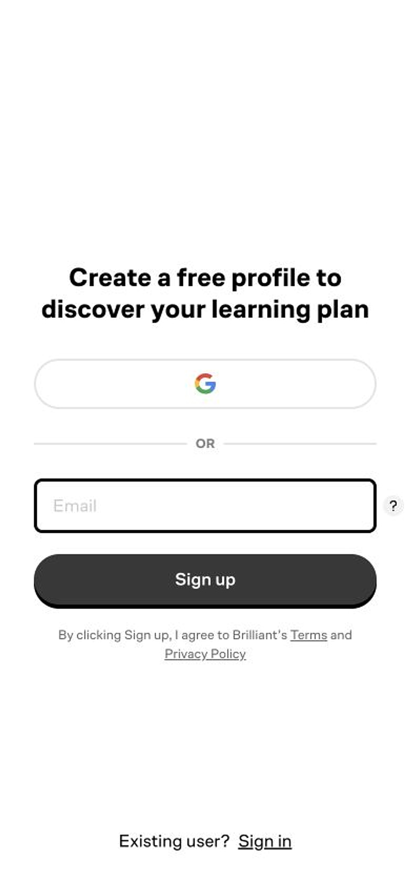
业务转化
注册不是起点，而是前面所有投入的结算点。
- 01价值证明
先看到可视化题目、导师语音和专家背书。
- 02自我投入
连续选择动机、科目、水平、时间与习惯。
- 03结果期待
系统宣布已经知道从哪里开始，却暂不揭晓。
- 04注册承接
创建账号被理解为保存并领取个人学习计划。
延迟注册减少冷启动摩擦，自我投入制造心理所有权，未揭晓的计划形成信息缺口，最终 CTA 顺着用户已经做出的决定自然落地。
它也有值得警惕的边界。
个性化体验很强，但未注册前无法验证课程是否真的高度自适应。三道题采集的是信心，不是真实解题能力。
- 真实个性化仍待证明当前路径只能确认它收集了多维信息。
- 结果完全后置投入较多后才发现需要注册，可能产生被吊胃口的感觉。
- 进度不够透明三段进度条强化推进感，但用户无法预估剩余步骤。
- 中国大陆注册风险Google 不是可靠主路径，应补充手机号、微信或本地身份体系。
八条可以直接复用的机制
让用户选择声音并可静音，再进入画像与诊断。
每道题都展示 Brilliant 最擅长的可视化交互。
No、Maybe、Yes 避免了答错与暴露无知。
明确只有三题，把不可控任务变成可预期事件。
不呈现负面评分，用鼓励过场维持自我效能。
从每天学多久继续追问什么时候学。
用户注册不是加入平台，而是发现自己的计划。
最值得借鉴的不是绿精灵，而是“提问之后必须回应”。
情感化设计在这里不是更可爱。它是一套持续降低自我暴露、能力焦虑和注册决策成本的机制。
打开原始体验